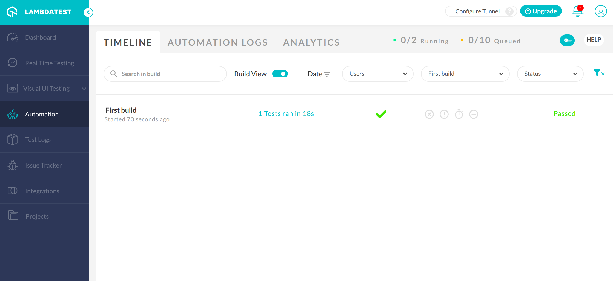

Automated testing in Lambdatest
Adding and running a simple test
Now that you got your Lambdatest account and got a overview of your dashboard UI, we will start working on creating a simple test for the webpage that we made in step 1. As we saw in the last step, you can manually test the functionality of a website with the Real time testing tool but doing all this manually is very time consuming and boring. What if we could automate these tests and simply view the results in a test log? This can be done, and we are going to show you how! The test we are going to create is going to use the Lambdatest Automation tool, and with this tool, we are going to test that the button we implemented on our website is behaving as we want it to, that is redirecting us to the desired page. To do this we are going to use node.js.
Firstly we need to set up your GitHub repository with the correct dependencies. Make sure that you have the latest version of npm with this command:
$ npm install npm@latest -g
And then run this command to install Selenium dependencies for node.js:
$ npm i selenium-webdriver
Now you can create an index.js file that will be used to write your tests in. What we first need to add to this file is some configuration. Your Lambdatest username and your unique accessKey. These can be found on your dashboard. Navigate to Automation and click the key symbol in the upper right corner and copy-paste your username and accessKey to your index.js file:
const USERNAME = '{yourUserName}';
const KEY = '{yourAccesKey}';
We also need to create constants such as webdriver, grid_host, and grid_url. These are used to run the tests and connecting them to your Lambdatest dashboard so that you can get the test logs and results:
const webdriver = require('selenium-webdriver');
const GRID_HOST = 'hub.lambdatest.com/wd/hub';
const gridUrl = 'https://' + USERNAME + ':' + KEY + '@' + GRID_HOST;
Now that these configurations are in your file, we can start writing our test function. First of all your function needs input capabilities that will decide for example what platform and browser your test will run on. These capabilities also have a parameter for the test name and build name:
function testButtonFunction() {
// Setup Input capabilities
const capabilities = {
platform: 'windows 10',
browserName: 'chrome',
version: '76.0',
resolution: '1280x800',
network: true,
visual: true,
console: true,
video: true,
name: 'Test click',
build: 'First build'
}
}
When this is done we can start setting up the actual driver that will perform the test. This is done by writing the following inside your test fucntion:
const driver = new webdriver.Builder()
.usingServer(gridUrl)
.withCapabilities(capabilities)
.build();
We then use this driver to write our actual test. Don't forget to change the URL to your github pages URL that we want to test:
// navigate to a url, click the button and get title of next page.
driver.get("{yourURL}").then(function() {
driver.findElement(webdriver.By.linkText("Click me!")).click().then(function() {
driver.getTitle().then(function(title) {
setTimeout(function() {if(title === 'Second Page') {
console.log('Passed');
driver.executeScript('lambda-status=passed');
driver.quit();
} else {
console.log('failed');
driver.executeScript('lambda-status=failed');
driver.quit();
}
}, 5000);
});
});
});
Described in natural language this is what the test does:
- Navigate to your url
- Find your button that you want to test and execute a click action
- Now find the title of the page
- Check that the title is what you expect it to be
Click here to view the entire index.js file as it should look now! Don't forget to add the call to the testButtonFunction in the bottom of the index.js file.
Now to run this file, simply execute this command:
$ node index.js
You can now enter your Lambdatest dashboard automation page, and it should present the results of your test like this:
